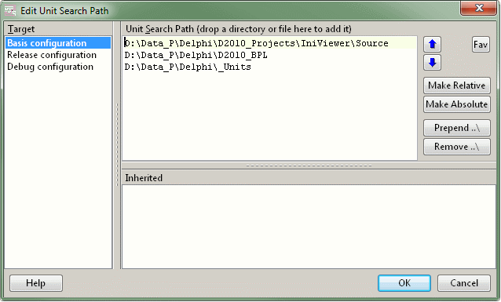

Edit Unit Search PathGeneral |
  
|
Edit Unit Search PathGeneral |
|
this page .. |
see also .. |
|---|---|
General |
|
|
Overview |
|
The "Edit Unit Search Path" expert helps you edit the unit search path of the current project. It provides easy access to the unit search paths of all targets configured for it. A configurable favorites menu gives access to frequently used paths.

Notice |
▪This expert is only available in Delphi versions from Delphi 2009 and later because the OTAPI did not offer access to the target list in earlier versions. |
|
▪In all Delphi versions from Delphi 6 and later the "IDE Enhancement for search paths" should work - the functionality of the enhancement is similar to the capabilities of this expert, albeit more restricted. |
Details |
|
Target |
|
▪The target list shows all compiler targets configured for the current project.
▪By default, the currently active compiler target of the project is preselected. This behavior can be changed in the configuration; the configuration dialog is accessible from in the GExperts configuration dialog.
▪You can select the desired target with the mouse or with Alt + up/down arrow keys.
▪The list does not provide options for creating or deleting targets; this must be done in the IDE.
Unit Search Path |
|
▪This is your central work area for managing search paths. It shows all defined search paths for the selected compiler target in the target list.
▪The list is actually no list but an editable TMemo; this allows you to quickly delete multiple lines or transfer paths and individual folder names using copy and paste.
▪It is possible to drop directories from the Windows Explorer on the memo to add them.
▪The alternative way to add directories is to use the "Fav" (favorites) button. The button shows a pop up from which you can select a favorite or open the favorites configuration dialog. If no favorites have been configured, the button immediately shows the favorites configuration dialog. A single favorite entry can contain multiple directories, so it is e.g. possible to add all directories necessary for libraries like Indy, JCL or JVCL with one click rather than having to add each of them separately.
▪With the up / down buttons or with Ctrl + up/down arrow keys you can change the order of the directory entries and thus their search priority and the compiler speed.
▪Using the buttons "Make Relative" or "Make Absolute" all directories in the memo will be made relative to the project file directory or absolute respectively.
▪With the buttons "Prepend ..\" or "Remove ..\" you can add or remove a relative path prefix for the currently selected line(s) to specify a parent or child directory as the starting point for the path specification.
Notice |
▪The ability to edit data without restrictions requires disciplined work, as the accessibility of the paths is not checked by the application. This option is very powerful, but you should know exactly what you are doing and whether your path specification references a correct directory under all circumstances. |
|
▪Most of the time you should prefer relative paths to absolute paths where possible. |
Inherited |
|
▪The lower list on the right is not editable, the list shows all inherited search paths for the current selected compiler target.